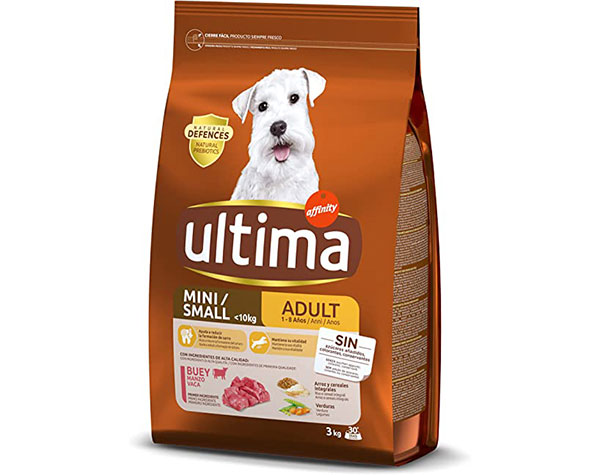
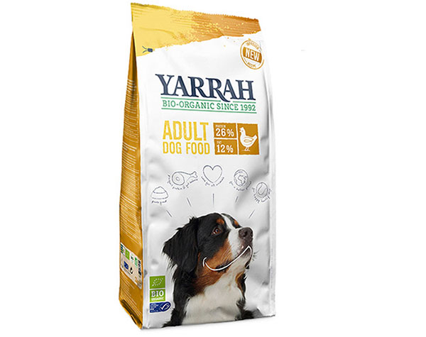
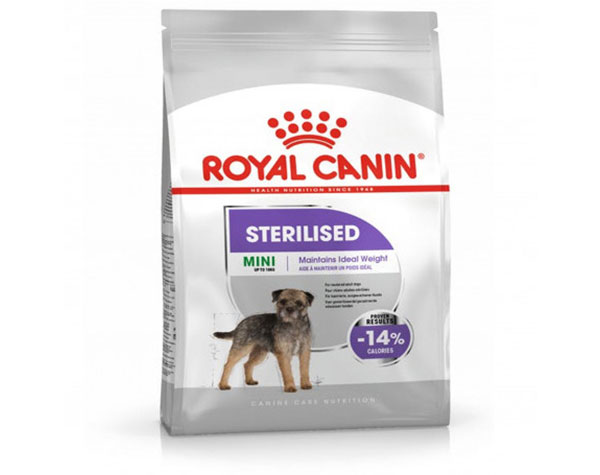
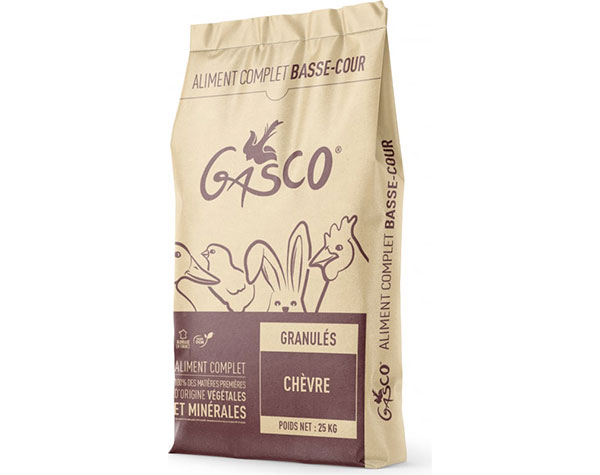
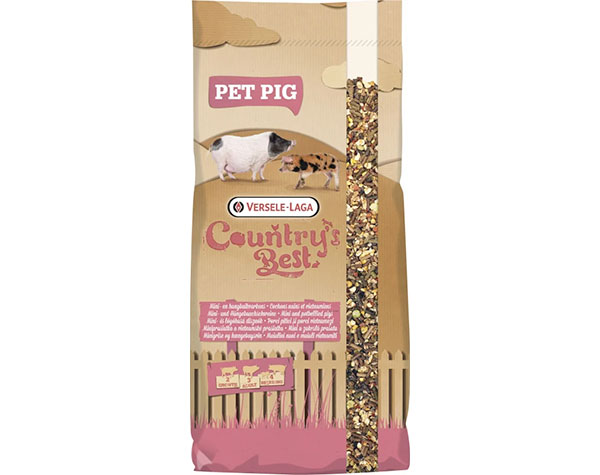
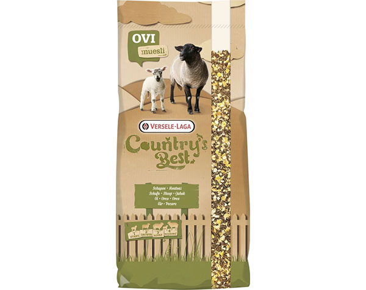

ALIMENTACIÓN PARA ANIMALES DE COMPAÑÍA |
||
|---|---|---|
|  |  |  |
Ultima - Mini AdultosComida para peros con tamaño reducido cuya edad supere los 18 años caninos. Elaborado con carne de buey |
Yarrah - Perros AdultosComida para perros de todo tamaño cuya edad supere los 18 años caninos. Realizado con productos 100% orgánicos y reciclados |
Royal Canin - MiniComida para perros de tamaño reducido y edad inferior a 18 años caninos. Esterilizado y testado por especialista con un 14% menos de calorías |
ALIMENTACIÓN PARA ANIMALES DE GRANJA |
||
|  |  |  |
Gasco - Pienso para Cabras EnanasEste alimento completo en gránulos es adecuado para cabras y ovejas; la ración recomendada es de entre 150 y 300 gramos por animal por día. Deja agua fresca para los animales disponible en todo momento. |
Pet Pig - Muesli para cerdos enanosMezcla deliciosa y de calidad superior para cerdos enanos y cerdos vietnamitas, se compone de gráunulos prensados y de cereales y verduras inflados. |
Ovimash - Muesli para borregos y corderos adultosOvimash 3 Muesli Country's Best Versele Laga es un alimento complementario para los borregos y corderos a partir de 6 semanas y para las ovejas durante la gestación. Esta mezcla contiene , ademas de granulados, copos de maíz y de cebada para una ingestión fácil. |